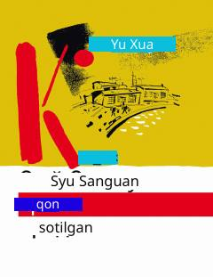

QSOilasi uchun qon sotib yashagan oddiy xitoylik erkakning hayot qissasi.
Bu roman Xu Sanguan ismli oddiy xitoylik erkak haqida bo'lib, u oilasini ochlikdan, kasallikdan va siyosiy qiyinchiliklardan asrash uchun qayta-qayta qon sotishga majbur bo'ladi. Yu Xuaning bu asari zamonaviy Xitoy adabiyotining eng nufuzli o'nta asari qatoriga kiritilgan. 2015 yilda Janubiy Koreya rejissyori tomonidan shu nomdagi film ham suratga olingan.